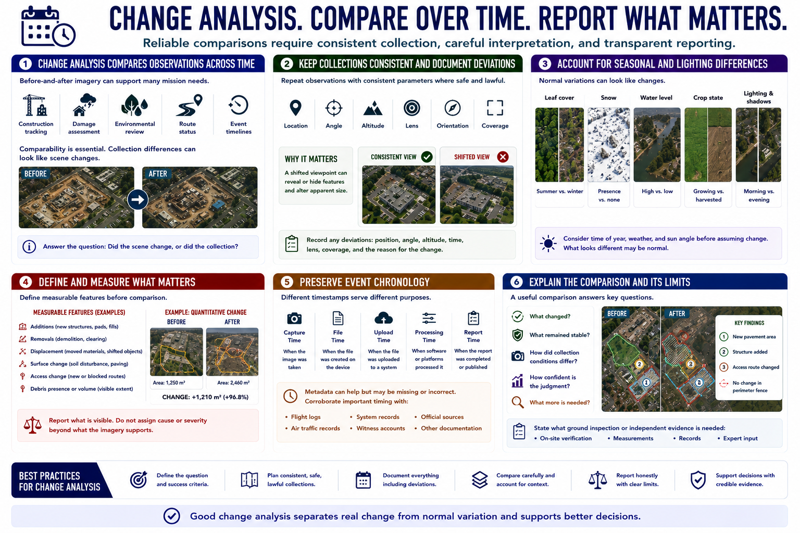

Time, Change, and Comparison
Connecting to LMS... Progress: in progress

Narration
Change analysis compares observations across time. Before-and-after imagery can support construction tracking, damage assessment, environmental review, route status, and event timelines. The images must be comparable enough that collection differences are not mistaken for scene changes.
Repeat flights or observations should use consistent location, angle, altitude, lens, orientation, and coverage where safe and lawful. Record deviations because a shifted viewpoint can reveal or hide features and alter apparent size.
Seasonal differences matter. Leaf cover, snow, water level, crop state, and ground color may change normally. Lighting and shadow direction vary with time and weather. These effects can resemble damage, removal, or new objects.
For construction or damage assessment, define measurable features before comparison. Record visible additions, removals, displacement, surface change, access change, or debris. Avoid assigning cause or severity beyond what the imagery supports.
Preserve event chronology. Distinguish capture time, file time, upload time, processing time, and report time. Metadata can help but may be missing or incorrect, so corroborate important timing with flight logs and other records.
A useful comparison explains what changed, what remained stable, how collection conditions differed, and how confident the judgment is. It also states what ground inspection or independent evidence is needed.